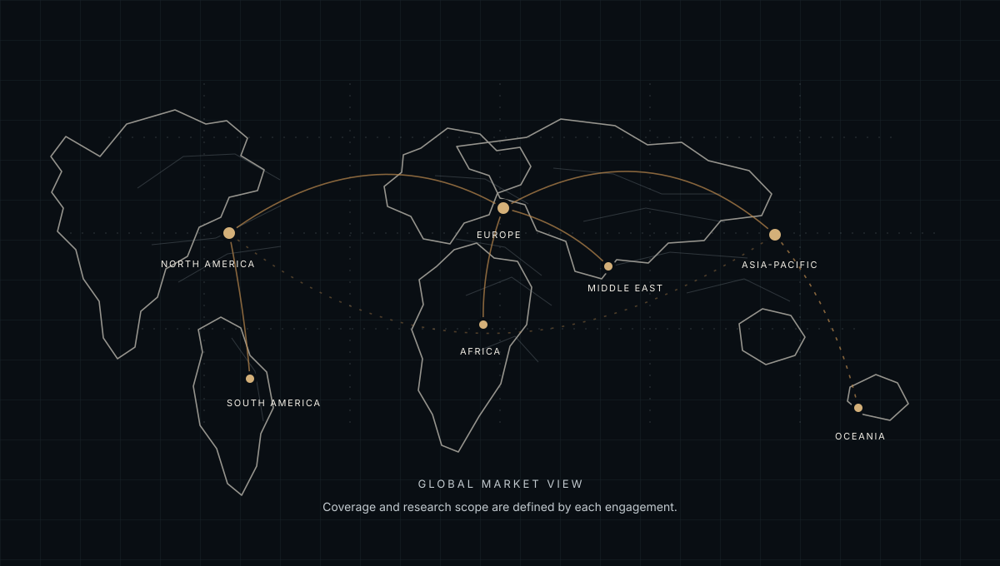

GLOBAL CAREER REPRESENTATION · SAUDI ARABIA
Approach a Saudi Arabia career move with a plan.
Clarify the leadership mandate, location, eligibility and employer fit before committing time to a cross-border search. Saudi Arabia executive career planning can include leadership role research, employer mapping, sector alignment, location and eligibility considerations, executive CV positioning, and cross-border job search preparation. Saudi Arabia executive career planning can include leadership role research, employer mapping, sector alignment, location and eligibility considerations, executive CV positioning, and cross-border job search preparation.
KOV can discuss remote career representation for senior professionals exploring opportunities in Saudi Arabia. Support depends on the role, market availability and agreed engagement; it does not imply local offices or guaranteed access.

DEFINE YOUR MOVE
Understand what needs to be true for the role to fit.
A country target is only one part of an executive move. Define the type of organization, role scope, reporting line, decision authority and working arrangements you would consider.
If relocation or work authorization is relevant, identify the questions early and verify requirements with appropriate official or qualified sources. KOV does not provide immigration advice.
- Role level, mandate and employer profile
- Location and relocation preferences
- Work authorization and timing questions
- Personal criteria and deal-breakers
POSITION WITH EVIDENCE
Explain the leadership experience you can bring.
Employers need to understand how your experience relates to their mandate. Your career narrative can make clear what you have led, in what operating context, and which outcomes are supported by evidence.
KOV can help organize that story and research relevant organizations for an agreed search. Any specific local-market assumptions should be checked during the engagement rather than treated as universal.
- Describe leadership scope and decisions
- Use verifiable outcomes and examples
- Target organizations against agreed criteria
- Adapt communication to each opportunity
AGREE THE PROCESS
Keep scope, confidentiality and expectations explicit.
International search work is coordinated remotely where KOV confirms service availability. A page about a location is not evidence of a physical office, local license or guaranteed recruiter access.
Before work starts, KOV and the professional agree deliverables, approval points, communication and fees in writing. Hiring decisions remain with employers and no outcome is guaranteed.
- Confirm availability and market boundaries
- Agree what information may be shared
- Set communication and approval preferences
- Use qualified advisers for legal or immigration questions
COMMON QUESTIONS
Before you start a conversation.
Does KOV have a Saudi Arabia office?
This page does not claim a local office. Contact KOV to confirm whether remote support is available for your role and market.
Can KOV guarantee a Saudi role or work authorization?
No. KOV cannot guarantee employment or immigration outcomes. Confirm work authorization requirements with official sources or a qualified adviser.
START A CONFIDENTIAL CONVERSATION
Start with your role and relocation questions.
Tell KOV about your target leadership role, current location, preferred market and timing. The first message can establish whether the requested support is a fit.
KOV works remotely across agreed markets; this page does not imply a local office or guaranteed outcome. Engagement scope and fees are discussed directly by message and agreed in writing before work begins.